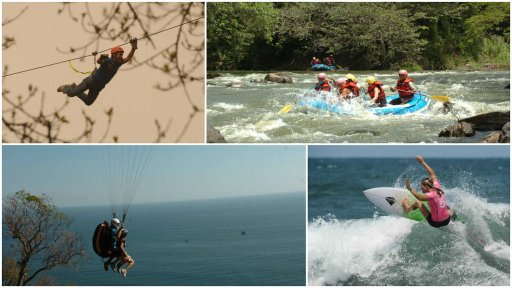
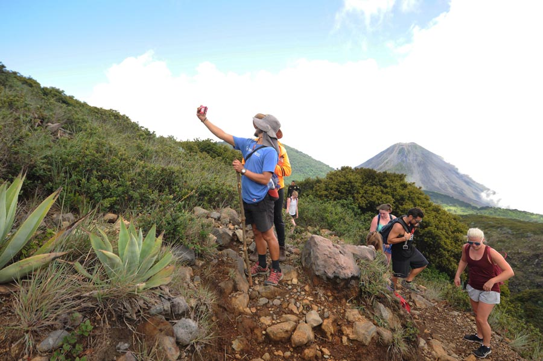
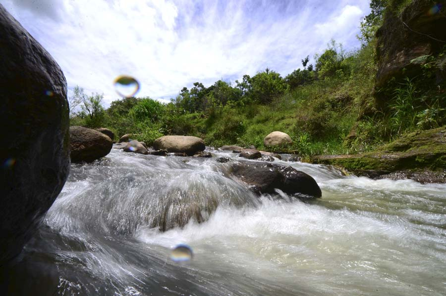
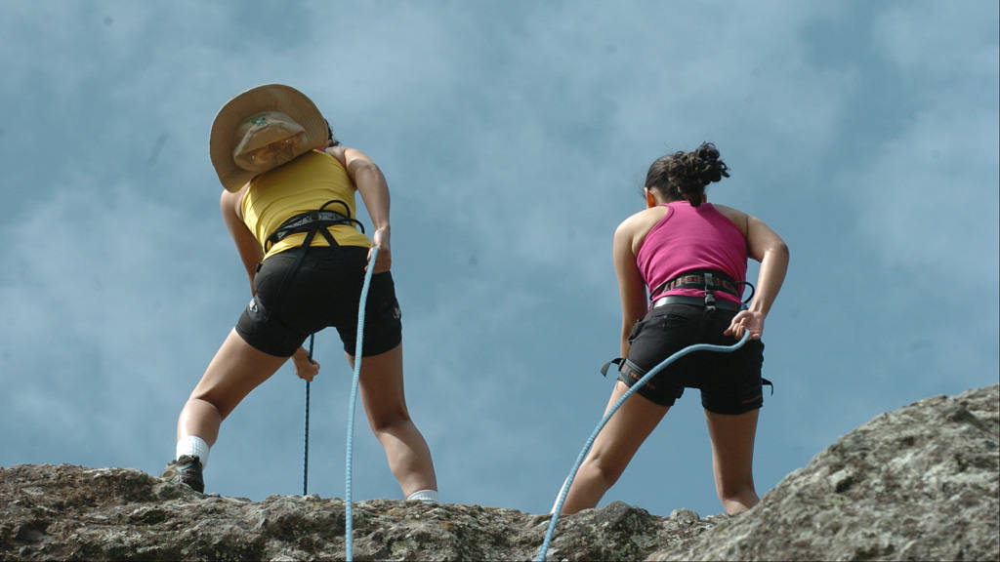
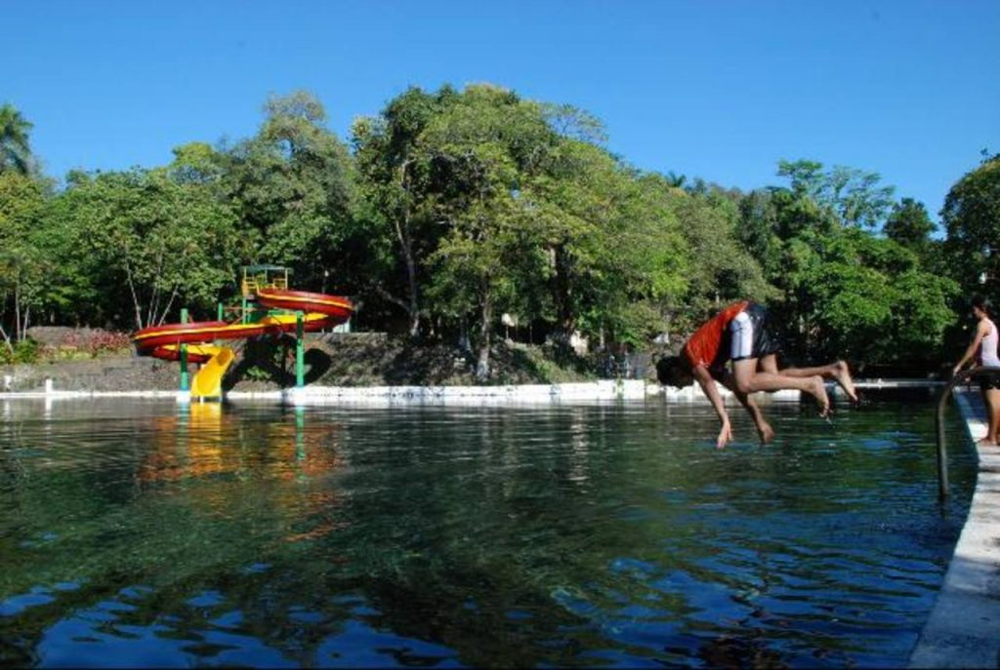
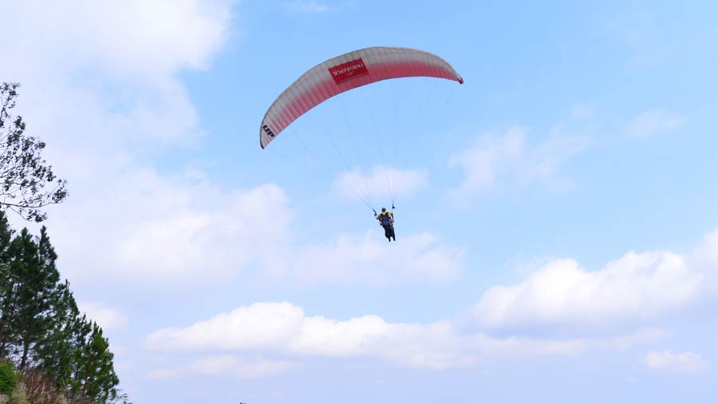
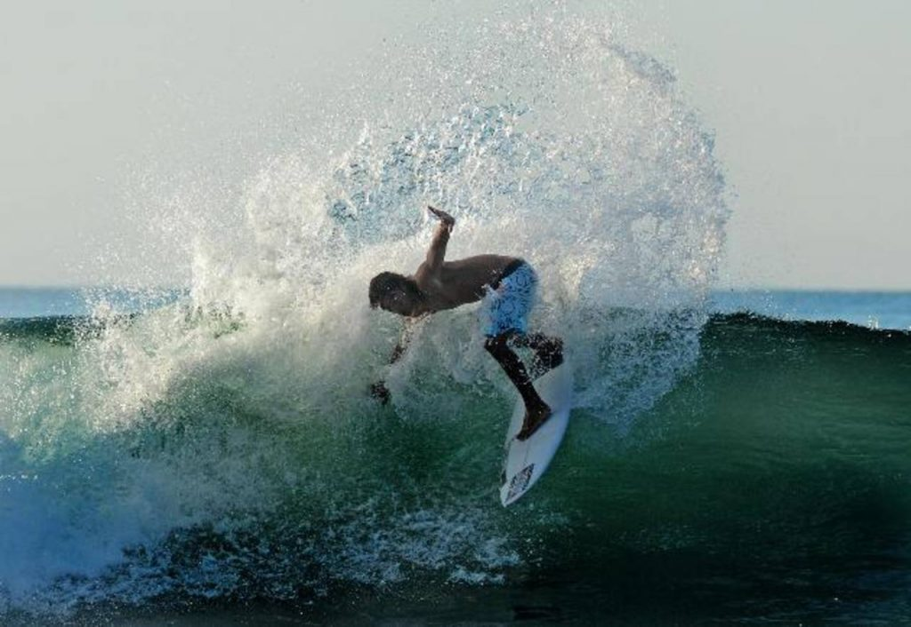

6 lugares turísticos en El Salvador que llenan de adrenalina
En El Salvador existen varios sitios para practicar deportes extremos. Si eres de los que le gusta llevar el cuerpo al límite y aceptar los retos, puedes optar por cualquiera de las opciones que te presentamos.
|  | 1. Caminata en el Cerro VerdeEntre los departamentos de Santa Ana y Sonsonate está ubicado el complejo “Los volcanes”, integrado por el volcán de Izalco, Ilamatepec y el Cerro Verde. El lugar cuenta con guías turísticos capacitados por el ISTU, para orientar a los visitantes. El recorrido por los volcanes consiste en caminatas extremas a partir de las 11 a.m. hasta las 4:00 p.m. Es necesario mucha agua, ropa cómoda y suficiente energía, pues no todos llegan hasta la cúspide. |
2. Rafting en el Río GuajoyoPara los amantes de los retos en aguas turbulentas existe el rafting, un deporte que consiste en atravesar un río siguiendo la corriente del mismo. Para ello es necesaria una balsa u otro tipo de embarcación. En Metapán, Santa Ana, está ubicado uno de los cauces más propicios para hacer rafting, se trata del río Guajoyo. Otras opciones son el río Sumpul y Paz. |
 |
|  | 3. Rapel en la Puerta del DiabloEn las afueras de la capital de San Salvador, está ubicada La Puerta del Diablo, un lugar turístico que además de poseer múltiples actividades recreativas para la familia, también ofrece servicio de rapel y canopy a los visitantes que aman los retos y la aventura, pues el peñón tiene una altura de más de mil metros sobre el nivel del mar y tiene una vista impresionante. La Puerta del Diablo será cerrada después de Semana Santa, autoridades del Instituto de Turismo realizarán trabajos de mejoramiento durante cinco meses. Pretenden remozar toda el área, senderos, iluminación, kioskos y otras mejoras. |
4. Circuito de las Cuerdas en el Parque AtecozolEn el departamento de Sonsonate, está ubicado el parque Atecozol. Dicho lugar cuenta con un amplio circuito de cuerdas altas y rapel. La emoción y adrenalina están aseguradas con 280 metros de obstáculos y 26 puentes. Este deporte puede ser desempeñado por 20 personas simultáneamente, en un tiempo récord de 30 minutos. |
 |
|  | 5. Parapente en el Lago de CoatepequeUn paracaídas controlado con cuerdas, un casco protector, un equipo de radio para comunicar las coordenadas, un altímetro y nervios de acero es lo que necesitas para practicar el parapente. Este deporte tiene algunos riesgos, por lo cual es importante recibir adiestramiento previo, ya que lanzarse a mil 200 metros sobre el nivel del mar y a 25 kilómetros por hora, no es sencillo. Otros lugares recomendados para hacer parapente son el lago de Ilopango, Tamanique y Conchagua. |
6. Surf en el SunzalLas mejores olas para surfear están en el Sunzal, departamento de La Libertad. Allí también se puede practicar windsurf, jet ski, buceo, snorkeling, jugar fútbol y volleyball. Este lugar ha sido la sede oficial de importantes competencias de surf porque posee uno de los diez mejores oleajes de todo el mundo y un panorama marino espectacular. |
 |